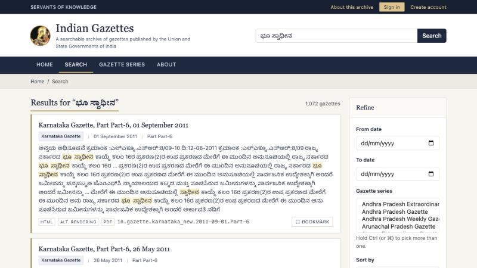

Our portal
Indian Gazettes
A searchable archive of gazettes published by the Union and State Governments of India, in text you can read, search and cite.

5.4 lakh+gazettes indexed
56gazette series
1922earliest issue
2026latest issue
Why it matters
Why gazettes matter
Governments publish bills, laws, rules, bye-laws and statutory orders in gazettes, along with notices on land acquisition, environment classification and town planning.
The problem
Why they are hard to use
Gazettes are PDFs, many of them scans that read badly on a phone. Regional gazettes often use proprietary, non-Unicode fonts, so copied text comes out as gibberish, and searching across them is hard.
What we do
What we do
We convert every gazette into structured HTML with its layout recognised, and turn old fonts into Unicode, so Indian-language gazettes can be searched. The original PDF stays one click away.